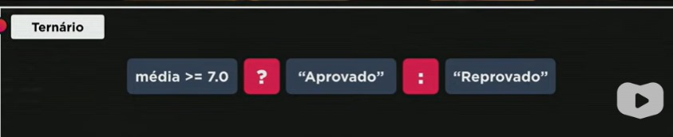

Maior, menor, maior ou igual, menor ou igual, igual diferente, são faceis:
>, <, >=, <=, ==, !=
== nao testa o tipo de dado, por exemplo 5=='5', daria true, pois mesmo sendo string daria igual, por isso existe o === que testa se são identicos em valor e tipo
! Negação, auto explicativo
&& Conjunção, e lógico
|| disjunção, ou lógico
? :
Serve para fazer uma pergunta, ao atribuir valor a algum dado, se for verdadeiro retora um valor se for falso retorna outro valor
